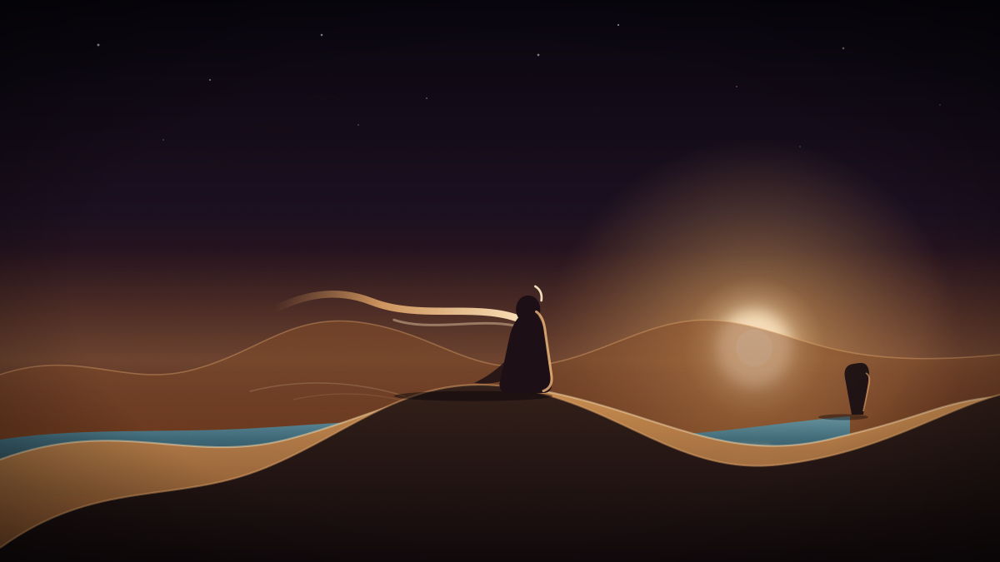

Dune
Pilgrim.
An endless desert that was never drawn by anyone. Sixteen shaped sine waves decide where the mountains stand and where the sea gets in — no tiles, no chunks, no edges — and you walk into the middle of it with a scarf, a long stride and the ability to draw.
Runs in the browser · WebGL · keyboard, mouse or touch · sound on · one save, kept on your device

DUNE PILGRIM — the ridge at first light · illustrationWhat it is
01There is no score, no timer and nothing chasing you. You are a pilgrim in a desert that keeps going in every direction, and the whole of the game is getting good at moving through it. You hold to glide, and she runs, then skims, then leaves the ground. Land on the right face of a dune at the right moment and flick sideways, and the landing becomes a bounce instead of a stop. Chain enough of those and the desert starts to feel like water.
Then you find out the sea is real. Dive, and the light stops behaving like air — red dies within a few metres, green holds, blue carries — and shafts of sun hang in the water where the world put them, not where the screen did. Underneath there are things moving that are much larger than you.
And the desert listens. Hold right mouse and draw a shape and the world reads it: a circle, a spiral, a triangle, a Z. Rain arrives. Grass comes up. A hole opens through the rock in front of you. Draw two in a row and they combine into something neither one does alone.
How to move
02Desktopmouse + keys
- click
- enter the world — the veil lifts and the pointer locks
- hold / W
- glide: she runs, skims, then flies
- mouse
- steer, and look around
- space
- climb
- shift
- dive — into the ground, or into the sea
- A / D
- flick sideways the instant you land, and it becomes a bounce
- right mouse
- hold and draw a shape to cast it
- P
- photo mode — she steps out of frame
- esc
- release the pointer
Touchphone + tablet
- hold
- glide
- drag
- steer
- two fingers
- dive
- flick
- sideways the instant you land, to bounce
- double tap
- then draw a shape to cast
- under water
- point where you want to go, and hold
- three fingers
- photo mode
- circle
- circle ccw
- spiral
- spiral ccw
- triangle
- square
- Z
- S
- V
- arc
- caret
- infinity
- line up
- line down
- line back
- spiral ccw → Z = storm
- circle → spiral
- circle ccw → circle
What is running under it
03-
The land 00
Sixteen shaped sine waves, four of them mountain-scale, written twice — once in JavaScript, once in GLSL — so the physics agrees with the pixels exactly. No hashing, no noise textures, no tiles. Two very long waves decide where continents rise and where the sea gets in.
-
Water 01
A real second world. Extinction kills red first, in-scatter replaces distance with open blue, and the sun shafts are anchored in world space so they hold still while you swim through them. The surface reads as a bright lid that recedes as she goes down.
-
The pilgrim 02
A body, not a capsule. She banks into turns, drops her shoulder into a landing, gets her breath back after a long climb, shields her eyes against a low sun, trails a hand through tall grass and shallow water, and every so often turns to look back at what she made.
-
Glyphs 03
Fifteen shapes the world can read, drawn with the mouse or a finger. Each one is confirmed back to you as a blueprint, so you see what the desert understood. Cast two within a few seconds and they combine — a counter-spiral into a Z turns rain into a storm.
-
Fauna 04
Five kinds of bird — swift, heron, raptor, ibis, nightjar — three beasts and three sea creatures, all instanced, all flocking. Fish flash when a school turns. Something long lives deep enough that you have to go looking for it.
-
Weather & sky 05
A two-minute day on a lifted arc, so nights are a short shallow twilight instead of a black screen. The moon runs an eight-day cycle and the tide follows it twice a day — the surface moves, the terrain never does, so nothing can drift out of sync.
-
Memory 06
The world saves itself to your device: what you planted, the rivers you cut, the craters you left, how green it has become. Come back a day later and the grass has grown while you were gone.
-
Sound 07
Everything but the score is synthesised live in the Web Audio graph — tones, impacts, the noise of water — tuned per event. Two music beds are embedded in the file itself, so the world has nothing to fetch and never waits on a network.
How it's built
04One HTML file. Open it and the world exists — there is no build step, no bundler, no server and nothing to install. The only dependency is three.js r128, which is served from this site rather than a CDN, so the page keeps working when a CDN does not.
It was written the way I now write most of my toys: in conversation — arguing with a model about what the light should do, then hand-tuning every constant until the desert felt like a place instead of a demo.
| Engine | three.js r128, WebGL 1 — custom GLSL for terrain, water, sky, fog and shadow |
|---|---|
| Terrain | 16 sine waves + 3 river waves, evaluated identically in JS and GLSL |
| Delivery | a single self-contained page, ~3.5 MB, music embedded as data |
| Persistence | localStorage — one world per browser, grown forward on return |
| Seed | ?seed=77345 — any integer builds a different desert |
| Reset | ?fresh=1 — start a clean world, keeping the same seed |
| Input | pointer lock + keyboard, or multi-touch; photo mode on both |
| Needs | a WebGL-capable browser and a discrete-ish GPU for a comfortable frame rate |
Best with sound on, in a full window. Click once, hold, and keep holding.
Enter the world ↗